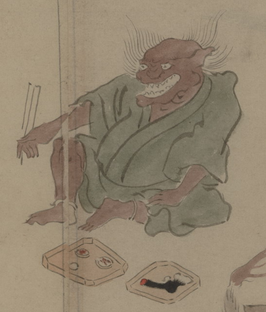

赤茶色の肌をした化物。髪の毛は逆立ち、耳が尖っている。開いた口には鋭い歯が並んでいる。緑色の衣をまとって、座っている。目の前には食べ物が載った折敷が置かれており、右手に箸を持っている。
出典：親書誌：U426_nichibunken_0150：付喪神絵詞；ツクモガミエコトバ／日付：2010／資源識別子：U426_nichibunken_0150_0033_0000
Copyright (c)2010- International Research Center for Japanese Studies, Kyoto, Japan. All rights reserved.